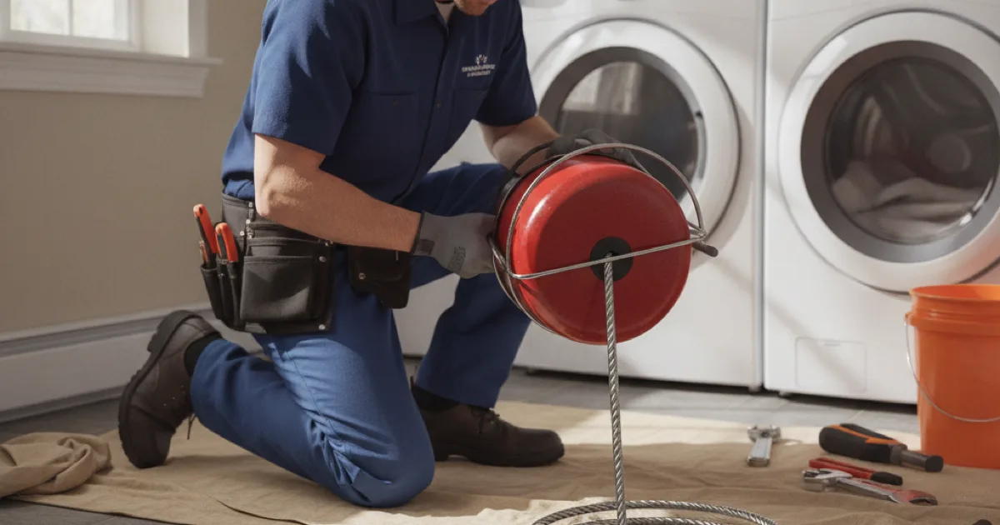

Drain Snaking & Rooter Service in Westchester County, NY
For a stubborn clog a plunger cannot budge, drain snaking clears the blockage mechanically. Dan's Drains provides snaking and rooter service to get your drains flowing again.
- Licensed & Insured
- Same-Day Service Available
- Upfront Pricing
- 15+ Years Local Experience

Need a plumber in Westchester County? We can usually help the same day.
What Drain Snaking Is
A drain snake, or auger, is a flexible cable fed into the drain to break up or pull out a clog. A rooter is a powered version that can cut through tougher blockages, including roots in a line.
It is the go-to method for a clog that a plunger cannot clear.
When Snaking Is the Right Choice
Snaking works well for a single stubborn clog in a sink, tub, toilet, or branch line. For grease buildup or heavy roots throughout a line, full-pipe hydro jetting cleans more thoroughly.
We choose the method that fits the clog rather than defaulting to one.
Talk to a local Westchester County plumber today.
How Snaking Works
We feed the snake to the blockage, work through it to clear the path, and confirm the drain is flowing freely. For tougher clogs, a powered rooter does the heavy lifting.
If the clog returns quickly, that tells us to look deeper, sometimes with a camera.
Clogs in Local Homes
Hair and soap in bathroom lines and food and grease in kitchen lines cause most of the clogs we snake here. Older homes with narrower or aging pipe clog a bit more easily.
Keeping harmful items out of the drain prevents repeats, echoing the EPA's water-wise guidance. We clear what has already built up.
When to Call a Pro
Call us when a plunger fails, when a clog keeps returning, or when a toilet or tub backs up. Professional snaking clears it without the pipe damage chemicals can cause.
If snaking keeps needing repeats, a deeper drain cleaning visit can address the underlying buildup.
Frequently Asked Questions
What is the difference between snaking and rooter service?
A snake is a cable that clears a clog by hand or with a drill; a rooter is a powered version strong enough to cut through tougher blockages and roots. We use whichever fits the clog.
When should I snake versus jet a drain?
Snaking is great for a single stubborn clog. Jetting is better for grease buildup and roots throughout a line. We recommend the right one for your situation.
Can snaking damage my pipes?
Done properly, no. We use the right tool and technique for your pipe, which is far gentler than harsh chemical cleaners.
Why does my clog keep coming back after snaking?
A quick repeat usually means buildup the snake did not fully clear or a deeper issue. We may recommend jetting or a camera look to solve it for good.
Can you snake a main line?
Yes. We snake branch lines and main lines, and for a main-line problem we often confirm the cause with a camera first.
Ready to book? Reach Dan’s Drains for fast, upfront plumbing help.